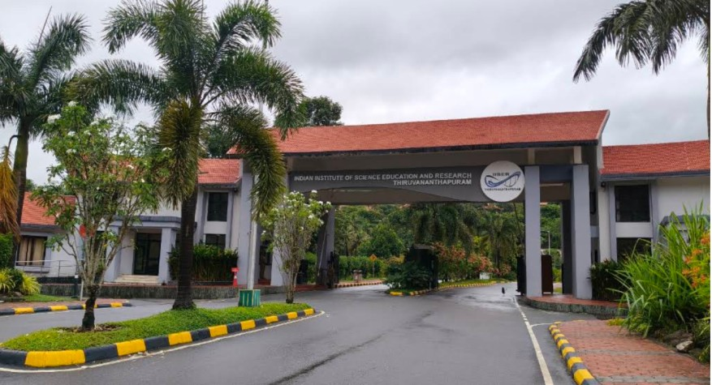

Addresses
Group Leader: Dr. Laltu Sardar
🏢 3106, Chemical Science Block,
School of Data Science, IISER Thiruvananthapuram
Maruthamala PO, Vithura, Thiruvananthapuram, Kerala 695551, India
📞 +91 (0)471 – 277-8396
✉️ laltu.sardar@iisertvm.ac.in
Other Group Members
Room 112, Lecture Hall Complex (LHC-112)
IISER Thiruvananthapuram
Thiruvananthapuram, Kerala 695551, India
Maruthamala PO, Vithura
✉️ qurac@tutamail.com
How to Reach IISER TVM
IISER Thiruvananthapuram is located at Vithura village, about 40 km from Thiruvananthapuram city. The first step for most visitors is reaching Thiruvananthapuram (Trivandrum) city centre, which is well connected by air, rail, and road.

By Air
Trivandrum International Airport (TRV) is the nearest airport, connected to major domestic and several international destinations.
By Rail
Thiruvananthapuram Central Railway Station (TVC) is the main railway station, with regular connections across India.
By Road
Thampanoor Bus Terminus is the main long-distance and interstate bus terminus in the city.
From Thiruvananthapuram to IISER TVM Campus
Once in the city, the campus can be reached from the airport, railway station, or bus terminus using the options below.
By Cab
| From | Mode | Approx. Cost |
|---|---|---|
| Trivandrum Airport (TRV) | Cab / taxi directly to IISER TVM campus (~50 KM) | ₹1,500-₹1,800 |
| Thampanoor Railway Station (TVC) | Cab / taxi directly to IISER TVM campus(~43 KM) | ₹1,100-₹1,500 |
- The fare should not exceed the amount mentioned above. However, depending on the time and your bargaining skills, you may be able to negotiate a lower price. Uber cabs often charge closer to the lower end of the range. Cabs waiting outside the airport typically charge around ₹2,500.
- Students are allowed up to Second Gate in Cab. An internal campus bus will be available from there to take them to the hostels and academic buildings.
- Visitors staying at Visitors' Forest Retreat (VFR) can set their destination directly to that location.
For the Budget Traveller
- Airport to Thampanoor: Take an auto-rickshaw from the airport to Thampanoor. Cost: ₹150 approx. Time: 25-30 min.
-
Thampanoor to IISER TVM: Take a bus from Thampanoor Bus
Terminus.
- If you are lucky: a direct bus to the IISER TVM Campus is available — Direct buses from Thampanoor depart at 05:00, 06:40, 06:50, 08:30, 14:40, and 15:15. Ask at the bus station enquiry counter for the current schedule.
- If a direct bus is not available: take a bus to Vithura, then an auto-rickshaw (or a connecting bus) from Vithura to the campus. Auto fare: approx. ₹150.
- If you're still out of luck: If buses to IISER or Vithura are unavailable or have a long waiting time, don't worry. Take a bus to Nedumangad, and from there, board a connecting bus to IISER TVM or Vithura. Buses from Nedumangad to IISER/Vithura run frequently during the day. However, this option is not recommended for first time visitors to the campus, as buses become infrequent after 8:00 PM.
- The direct bus from Thampanoor to the IISER TVM campus takes approximately 2 hours, while changing buses at Thampanoor adds about 30 minutes to the journey.
Note: Buses bound for Jersey Farm also serve IISER TVM and can be considered as IISER TVM buses.